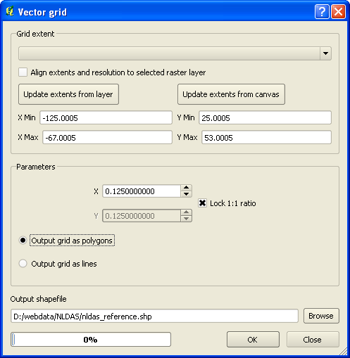
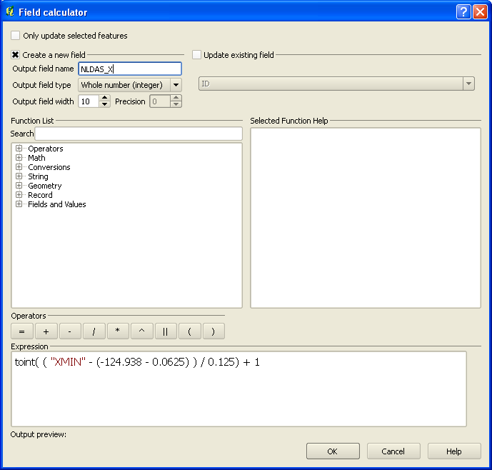
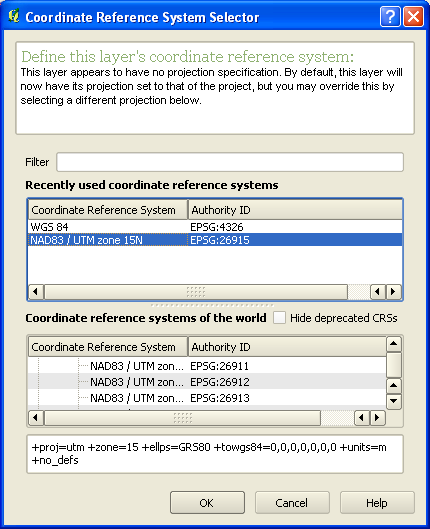
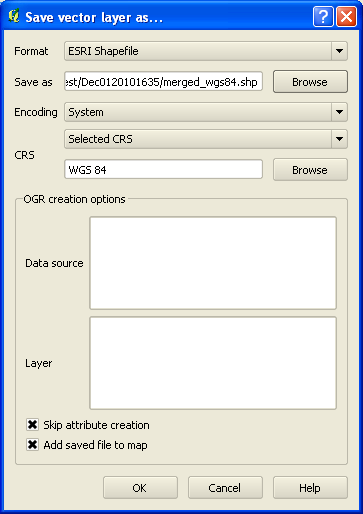
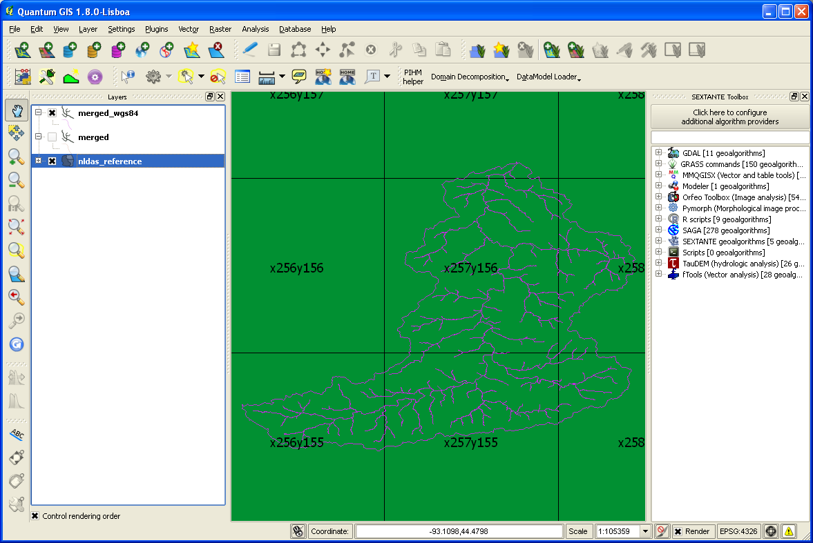
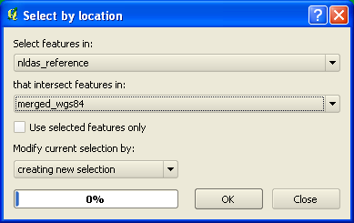
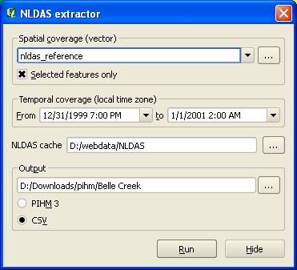
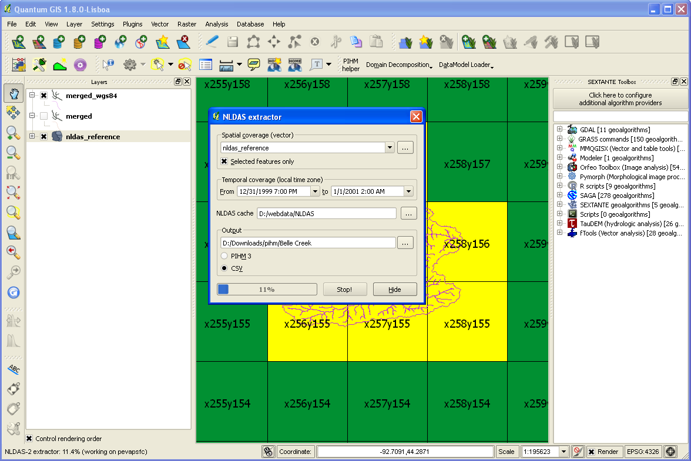

NLDAS-2 Extractor

Table of Contents
1 Setting things up
For historical reasons a shapefile with reference grid is needed for this tool to work.
Skip these steps and jump to Usage if you already have that.
- Start Vector→ Research Tools→ Vector grid
- Enter extent as in NLDAS-2 metadata taking into account that those
given for centroids.
So use (-124.938 - 0.0625, 25.063 - 0.0625) — (-67.063 + 0.0625, 52.938 + 0.0625)
or (-125.0005, 25.0005) — (-67.0005, 53.0005)

Vector Grid tool
- Open Attribute Table and toggle editing mode (
Ctrl+E) - Using field Calculator (
Ctrl+I) set 1 based indices- NLDAS_X
toint( ( "XMIN" - (-124.938 - 0.0625) ) / 0.125) + 1- NLDAS_Y
toint( ( "YMIN" - (25.063 - 0.0625) ) / 0.125) + 1

Field Calculator
- Create text field
NLDAS_IDby concatenating 'x' || "NLDAS_X" || 'y' || "NLDAS_Y" .
Remember to use text output field type. - Quit editing mode saving changes
- Set layer coordinate reference system (CRS) to WGS84 if not assigned yet
Note that there a bugs in Vector Grid plug-in that are fixed in QGIS 2.0 so your mileage may vary:
Perhaps it is easier to download existing one.
2 Usage
There are 3 entry points to extractor:
- Command Line Interface
- Standalone GUI
- QGIS plug-in
All interfaces require vector data in WGS84 to define spatial coverage. Therefore proper CRS needs to be assigned to the existing layer and it must be saved in WGS84 accordingly.

Assign CRS if missing

Save vector layer in WGS84
It should look something like

QGIS overview
if you enabled labeling based on NLDAS_ID. Now you can select necessary cells by locations using Vector→ Research Tools→ Select by location

Select by location
Now you can either save selection and use standalone versions, or jump to QGIS plugin
Make sure that you have all the necessary python modules and that Qt shared objects can be found. For instance the following batch file can be used on MS Windows.
@echo off set OSGEO4W_ROOT=C:\OSGeo4W set PYTHONPATH=%OSGEO4W_ROOT%\apps\qgis\python;%OSGEO4W_ROOT%\apps\qgis\python\plugins;%HOME%/.qgis/python/plugins;%OSGEO4W_ROOT%\apps\python27\lib\site-packages set PATH=%OSGEO4W_ROOT%\bin;%OSGEO4W_ROOT%\apps\qgis\bin;%OSGEO4W_ROOT%\apps\qgis\plugins python nldas_extractor_gui.py %*
2.1 QGIS plugin
Once you have selected cells of interest, you can use Plugin→ PIHM
helper→ DataModel Loader→ Extract NLDAS-2
or simply hit Alt+A, N

NLDAS-2 extractor

NLDAS-2 extraction in progress
Note that there is an issue with python threads therefore a workaround is used for plug-in to be still usable.